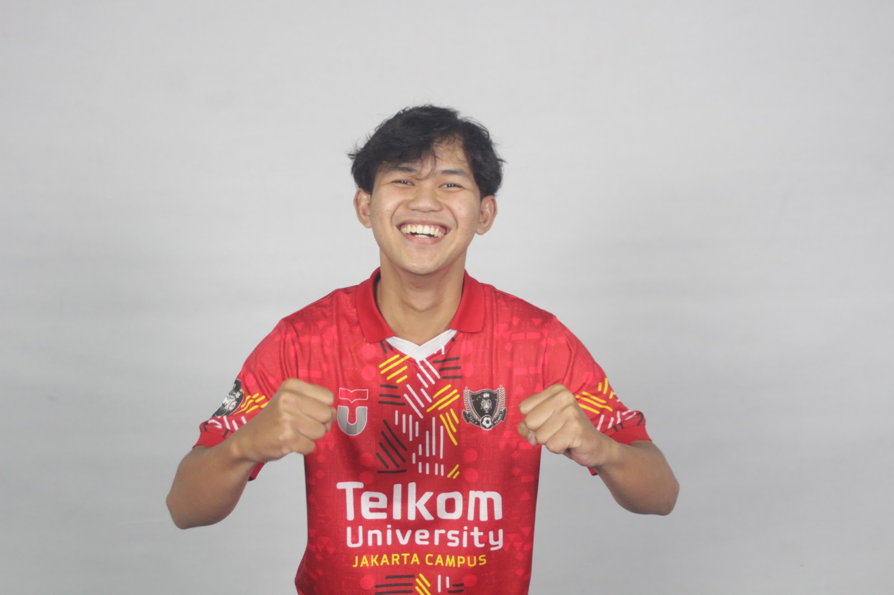
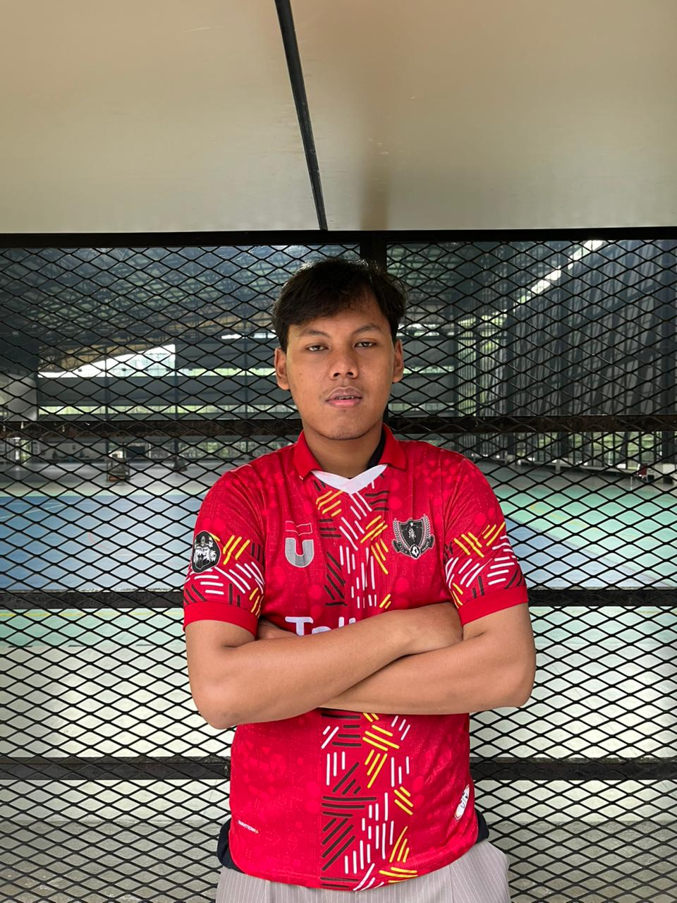
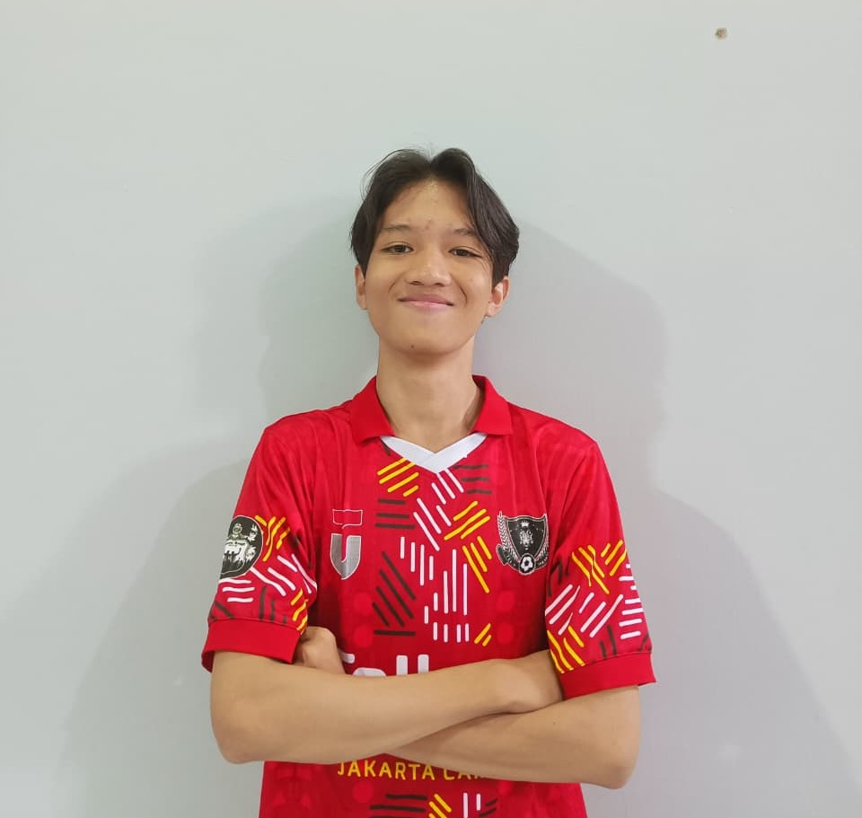

PEMILIHAN KETUA UKM FUTSAL
Telkom University Jakarta 2025–2026
The Captain's Seat is Open! Isi dengan suaramu!
Daftar Kandidat Ketua

Bagas Dwi Saputra
Kandidat Nomor Urut 1
Visi
Mewujudkan UKM Futsal yang solid, profesional, dan berprestasi sebagai wadah pengembangan minat bakat, serta karakter mahasiswa di bidang olahraga futsal.
Misi
- Menjadikan UKM Futsal sebagai ruang yang inklusif dan positif bagi seluruh mahasiswa yang memiliki minat di bidang futsal.
- Meningkatkan kualitas latihan dan pembinaan agar mampu bersaing di tingkat regional maupun nasional.
- Menjalin kerja sama dengan pihak internal dan eksternal kampus untuk mendukung kemajuan UKM Futsal.
- Menumbuhkan semangat sportivitas, solidaritas, dan kepemimpinan melalui kegiatan futsal.
Program Kerja Unggulan
-
Pembinaan Rutin dan Open Recruitment
- Latihan rutin dua kali seminggu (teknik, taktik, dan fisik)
- Coaching clinic bersama pelatih futsal
-
Turnamen Internal & Eksternal
- Turnamen Futsal Antar Universitas dan fakultas
- Friendly match antar universitas
-
Digitalisasi dan Branding UKM
- Membuat konten media sosial (highlight, tips futsal, profil anggota)
- Membangun branding UKM melalui Tiktok dan Instagram
-
Sinergi Internal Kampus
- Kolaborasi dengan UKM lain (UKM Musik, Media, dsb.) untuk event gabungan
- Partisipasi aktif dalam acara kampus (Liga Mahasiswa , Ppko, Ppkm dan Innovillage )

Muhammad Edi Tohirin
Kandidat Nomor Urut 2
Visi
Mewujudkan tim futsal yang tangguh, disiplin, dan berprestasi tinggi, dengan menjunjung tinggi rasa tanggung jawab, solidaritas, serta mental positif yang terus terjaga.
Misi
-
Membangun Mental Tangguh dengan Mengembangkan mental yang kuat pada setiap anggota melalui latihan rutin, disiplin yang tinggi, dan keyakinan diri yang tak terbatas.
-
Meningkatkan Performa Secara Konsisten dengan cara meningkatkan kemampuan tim melalui latihan yang teratur dan fokus untuk mencapai hasil terbaik.
-
Menciptakan Budaya Tim yang Solid dengan membangun kebersamaan, saling mendukung, dan berfokus pada kemenangan tanpa mengorbankan nilai-nilai sportivitas.
-
Pembinaan Teknik dan Analisis Permainan dengan menyusun pola latihan yang baik, terstruktur, didukung dengan pendekatan analisis permainan dan pembinaan yang baik terus menerus.
-
Menjadikan Futsal sebagai Identitas Kebanggaan yang menjadikan futsal sebagai simbol semangat juang, solidaritas, dan kebanggaan kampus yang membawa nama baik tim di setiap langkah.
Program Kerja
-
Program Kedisiplinan & Motivasi Anggota
- Mengadakan sesi team building/evaluasi tim dan motivasi setiap dua bulan sekali untuk memperkuat kebersamaan dan semangat juang tim.
- Menerapkan sistem absensi serta penilaian kedisiplinan yang terukur bagi setiap anggota.
- Memberikan penghargaan seperti Most Improved Player atau pemain paling rajin latihan setiap 3 bulan sekali sebagai bentuk apresiasi dan motivasi bagi anggota.
-
Latihan Terstruktur dan Evaluasi Performa
- Menyelenggarakan latihan rutin dua kali seminggu dengan fokus pada penguatan fisik, penguasaan teknik, serta penerapan taktik permainan.
- Melakukan sesi analysis atau tanya jawab after match/latihan tanding untuk menganalisis strategi dan performa tim.
- Mengadakan evaluasi performa pemain setiap akhir bulan bersama pelatih dan kapten tim sebagai bahan perbaikan dan pengembangan.
-
Kompetisi dan Sparing Berkala
- Menyelenggarakan friendly match rutin antar fakultas dan universitas setiap bulan.
- Berpartisipasi dalam berbagai kompetisi eksternal seperti turnamen antar universitas dan event olahraga kampus.
- Mengadakan Mini Tournament Internal setiap semester untuk menjaga atmosfer kompetitif di lingkungan UKM.
-
Kolaborasi dan Penguatan Relasi Kampus
- Menyelenggarakan program “Futsal Mengajar” di sekolah-sekolah dasar atau menengah untuk mengenalkan dasar permainan futsal.
- Berpartisipasi aktif dalam kegiatan kampus seperti Liga Mahasiswa dan Expo UKM.
-
Branding & Identitas Tim “Proud to be Futsal”
- Membentuk tim media dan publikasi untuk mengelola seluruh dokumentasi kegiatan UKM Futsal.
- Membuat konten kreatif seperti highlight latihan, dokumentasi pertandingan, profil pemain, serta aktivitas sosial tim.
- Berkolaborasi dengan UKM lain dan pihak kampus untuk memperluas jangkauan serta memperkenalkan UKM Futsal ke masyarakat luas.

Syauqi Hilyah Santoso
Kandidat Nomor Urut 3
Visi
Mewujudkan tim futsal yang tangguh, disiplin, dan berprestasi tinggi bukan hanya sekadar bermain, namun memiliki rasa tanggung jawab dan solidaritas tinggi, dan tetap mempertahankan mental positif yang sudah dibangun.
Misi
-
Membangun mental tanguh di setiap anggota melalui latihan rutin, kedisiplinan tinggi, dan rasa percaya diri tanpa batas.
-
Meningkatkan performa tim secara konsisten, dengan mengikuti latihan secara rutin.
-
Menciptakan budaya tim yang solid, saling mendukung, dan berorientasi pada kemenangan tanpa mengorbankan sportivitas.
-
Membangun pola latihan terarah dengan pendekatan analisis permainan serta pembinaan teknik yang berkelanjutan.
-
Menjadikan futsal bukan hanya olahraga, tapi identitas kebanggaan yang membawa semangat juang, solidaritas, dan nama baik kampus.
Program Kerja
-
Pembelajaran dan pelatihan
- Mengadakan pelatihan rutin empat kali dalam sebulan.
- Mempertahankan pelatih external.
- Mengikuti kompetisi eksternal setiap bulannya minimal satu kali.
- Mengadakan sparing atau uji coba antar Universitas dan fakultas untuk mengukur mentalitas pemain.
- Mengadakan evaluasi performa pemain setiap akhir bulan bersama pelatih.
-
Publikasi dan Hubungan Eksternal
- Membuat dokumentasi saat pelatihan rutin dan kompetisi.
- Bekerja sama dengan pihak UKM dan berkolaborasi dalam kegiatan internal kampus.
-
Fasilitas
- Mengadakan pengecekan fasilitas/perlengkapan futsal secara rutin satu kali dalam sebulan.
- Membuat jersey tahunan baru.
-
Prestasi dan Regenerasi
- Memberikan penghargaan kepada pemain yang selalu hadir dalam peltihan rutin di akhir kepengurusan.
- Memberikan pengahrgaan best player kepada pemain yang memiliki prestasi tinggi di UKM Futsal.
- Memilih calon-calon kepengurusan untuk melanjutkan kepengurusan yang ada.
- Mengadakan evaluasi besar di akhir kepengurusan